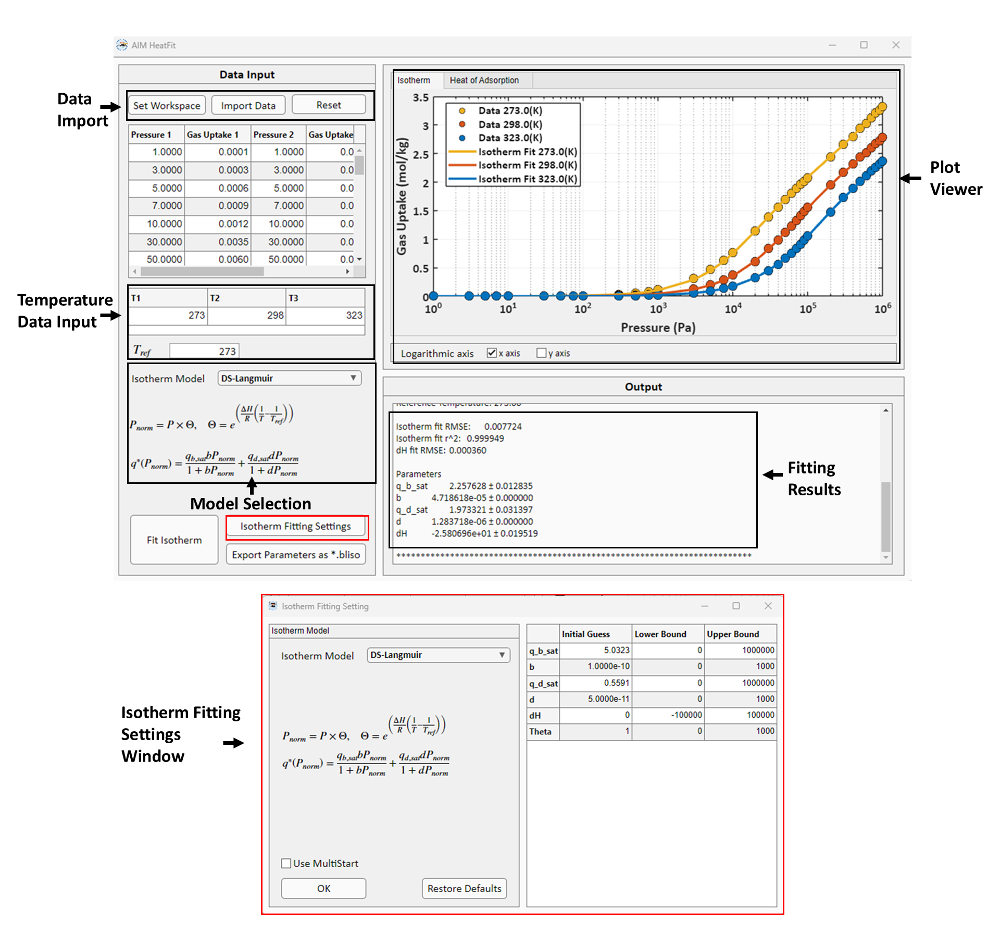

HeatFit
HeatFit is the module for isotherm model fitting to multi-temperature isotherm data and isosteric heat of adsoprtion \(\Delta H_{ads}\) prediction using Clausius-Clapeyron or Virial equations. HeatFit GUI is shown below:
{kind=link}
In HeatFit, isotherm fitting and prediction of the isosteric heat of adsorption can be carried out using either the Clausius-Clapeyron or Virial equations. Fitting method varies based on the chosen model.
1. Fitting using Clausius-Clapeyron equation
The Clausius-Clapeyron is a thermodynamic relationship which expresses the relationship between pressure and temperature for phase change processes. For adsorption processes, the Clausius-Clapeyron equation is given as,
HeatFit uses the following methodology for isotherm fitting and \(\Delta H_{ads}\) prediction:
Step 1: Isotherm fitting at reference multi-temperature
Step 2: Fitting for \(\Theta\) parameter.
Step 3: Fitting for isosteric heat of adsoprtion \(\Delta H_{ads}\).
In all three steps, regression is performed using MATLAB’s built-in lsqnonlin solver. The user can control the regression process using different sets of values for initial guesses, lower and upper bounds.
Step 1: Isotherm fitting at reference temperature
Like IsoFit, the isotherm fitting at reference temperature is performed for the chosen isotherm model using non-linear regression. Currently, HeatFit supports the following isotherm models:
Isotherm Models |
Isotherm Expression |
Parameters |
|---|---|---|
Langmuir |
\(q = \frac{q_{sat} b P}{1 + b P}\) |
\(q_{sat},\ b\) |
Dual-site Langmuir |
\(q = \frac{q_{sat,1} b_{1} P}{1 + b_{1} P} + \frac{q_{sat,2} b_{2} P}{1 + b_{2} P}\) |
\(q_{sat,1},\ b_{1},\ q_{sat,2},\ b_{2}\) |
Langmuir-Freundlich |
\(q = \frac{q_{sat} b P^{n}}{1 + b P^{n}}\) |
\(q_{sat},\ b,\ n\) |
Dual-site Langmuir-Freundlich |
\(q = \frac{q_{sat, 1} b P^{n_{1}}}{1 + b_{1} P^{n_{1}}} + \frac{q_{sat,2} b_{2} P^{n_{2}}}{1 + b_{2} P^{n_{2}}}\) |
\(q_{sat,1},\ b_{1},\ n_{1},\ q_{sat,2},\ b_{2},\ n_{2}\) |
Quadratic |
\(q = q_{sat}\left(\frac{b P + c P^{2}}{1 + b P + c P^{2}}\right)\) |
\(q_{sat},\ b,\ c\) |
Temkin |
\(q = q_{sat}\left(\frac{b P}{1 + b P}\right) + q_{sat}\theta\left(\frac{b P}{1 + b P}\right)\left(\frac{b P}{1 + b P}-1\right)\) |
\(q_{sat},\ b,\ \theta\) |
BET |
\(q = \frac{q_{sat} b P}{(1 - c P)(1 - c P + b P)}\) |
\(q_{sat},\ b,\ c\) |
Sips |
\(q = \frac{q_{sat} (b P)^{1/n}}{1 + (b P)^{1/n}}\) |
\(q_{sat},\ b,\ n\) |
Toth |
\(q = \frac{q_{sat} b P}{\left(1 + (b P)^n\right)^{1/n}}\) |
\(q_{sat},\ b,\ n\) |
The objective of the non-linear regression is to minimize the :math::SSE function given as,
where \(N\) and \(q_{i,exp}^{*}\) represents the total number of data points and the experimental gas uptake for the given data point \(i\), respectively. \(f(P_{i}; \{a_{k}\}_{1}^{M})\) is the isotherm model where, \(P_{i}\) is the pressure value for the given data point \(i\), \(a_{k}\) is the set of parameters and \(M\) is the total number of parameters for the given isotherm model.
In HeatFit the user can control the regression process by specifying custom initial guesses, as well as lower and upper bounds. Additionally, HeatFit offers a multistart option, which generates 1000 random initial guess within the specified bounds. The fitting process is then performed sequentially for each initial guess and the best fitting result is selected. The multistart approach is useful for fitting problems with multiple parameter solutions. In such cases, fitting using multistart option can identify the global minimum corresponding to the best parameter estimates. The multistart option is available for all isotherm models except Auto mode. In Auto mode, IsoFit performs isotherm fitting using all the available isotherm models and then selects the best model. Using multistart option for Auto mode can be computationally expensive leading to excessive running times.
Root mean square error \((RMSE)\) is used in the program to evaluate the goodness of fit.
If the user chooses the Auto mode, HeatFit reports the best isotherm model with the lowest RMSE values. If two or more models have same value of SSE, then HeatFit will choose the model with a smaller number of parameters because of lower value of RMSE for \(\Delta H_{ads}\) predcition.
HeatFit also reports coefficient of determination, \(r^{2}\), value defined as:
where \(\overline{q_{i,exp}}\) is the mean value of experimental gas uptakes.
Step 2: Fitting for \(\Theta\) parameter.
Second step involves using the isotherm model and the parameters obtained from fitting at reference temperature to get a set of parameters \(\Theta\), which is defined as,
where \(Z\) is the total number of temperature values used in the fitting process. Every \(θ_{j}\) value in the \(\Theta\) vector corresponds to temperature value \(T_{j}\). Then the program uses non-linear regression to fit for each \(θ_{j}\) value with the objective function defined as follows,
where \(q_{j, exp}^{*}\) is the experimental gas uptake at temperature \(T_{j}\) while \(g(P; \theta_{j})\) can be expressed as,
where \(f_{ref}\) and \(a_{k,ref}\) represents the isotherm function and isotherm function parameters obtained in step 1 at reference conditions, respectively.
Step 3: Fitting for \(\Delta H_{ads}\)
Next, the correlation between \(θ_{j}\) and \(T_{j}\) is used to fit for \(\Delta H_{ads}\). The correlation is given by the Clausius-Clapeyron equation as:
The program uses non-linear regression to fit for \(\Delta H_{ads}\) value while minimizing the objective function defined as:
HeatFit also reports RMSE value for \(\Delta H_{ads}\) fitting, which is given as,